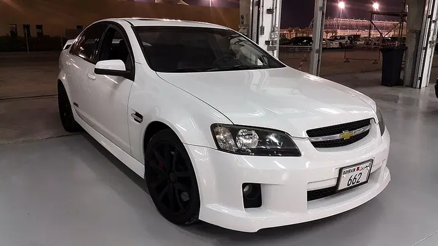
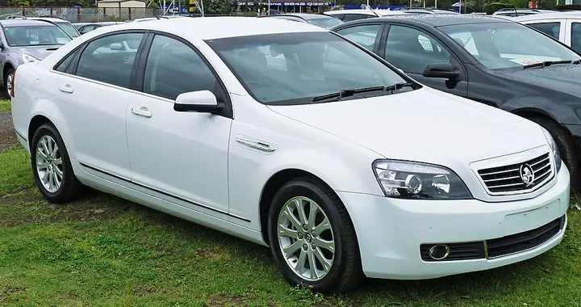
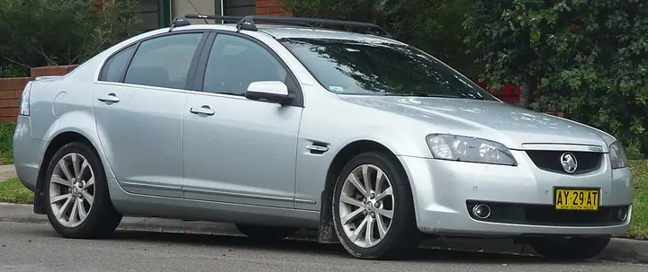
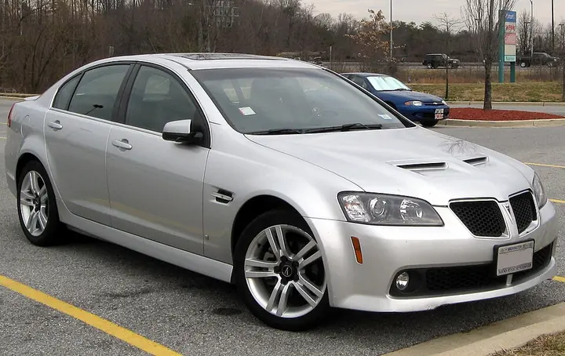

Platform
GM Zeta
10 generations of 9 models by Chevrolet, Holden, Buick, Pontiac and Vauxhall, 2006–2017.
The cars
 Chevrolet Caprice · Sixth generation (2006–2017)
Chevrolet Caprice · Sixth generation (2006–2017)
Chevrolet Lumina · Fourth generation (2006)
Holden Caprice · WM
Holden Commodore · VE (2006–2013) Buick Park Avenue · Third generation (2007–2012)
Buick Park Avenue · Third generation (2007–2012)
Pontiac G8 Vauxhall VXR8
Vauxhall VXR8 Chevrolet Camaro · Fifth generation (2010–2015)
Chevrolet Camaro · Fifth generation (2010–2015) Chevrolet SS
Chevrolet SS Holden Commodore · VF (2013–2017)
Holden Commodore · VF (2013–2017)